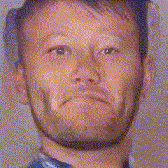
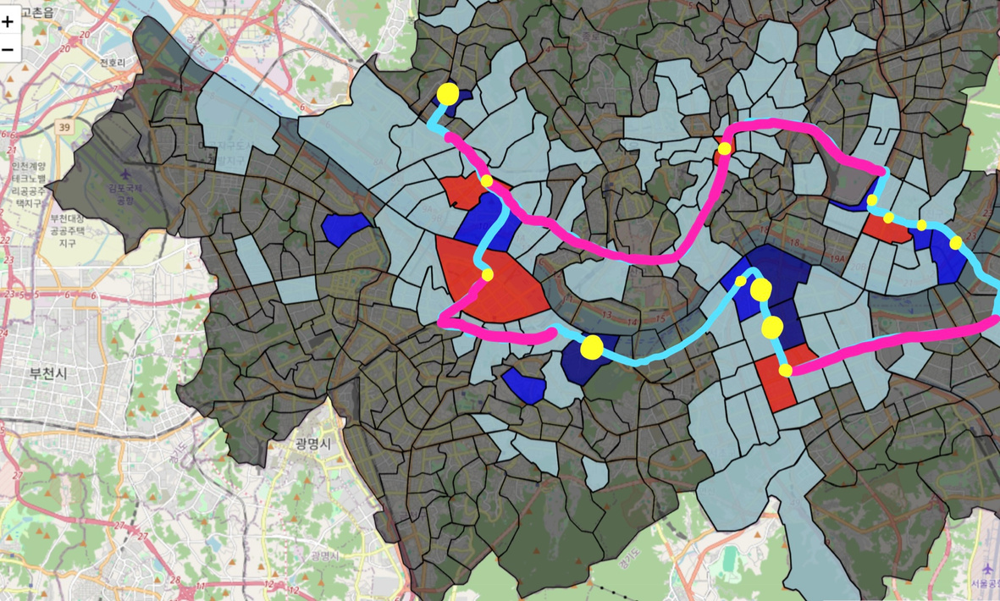
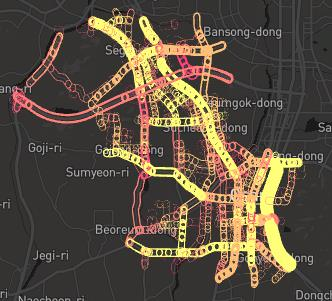
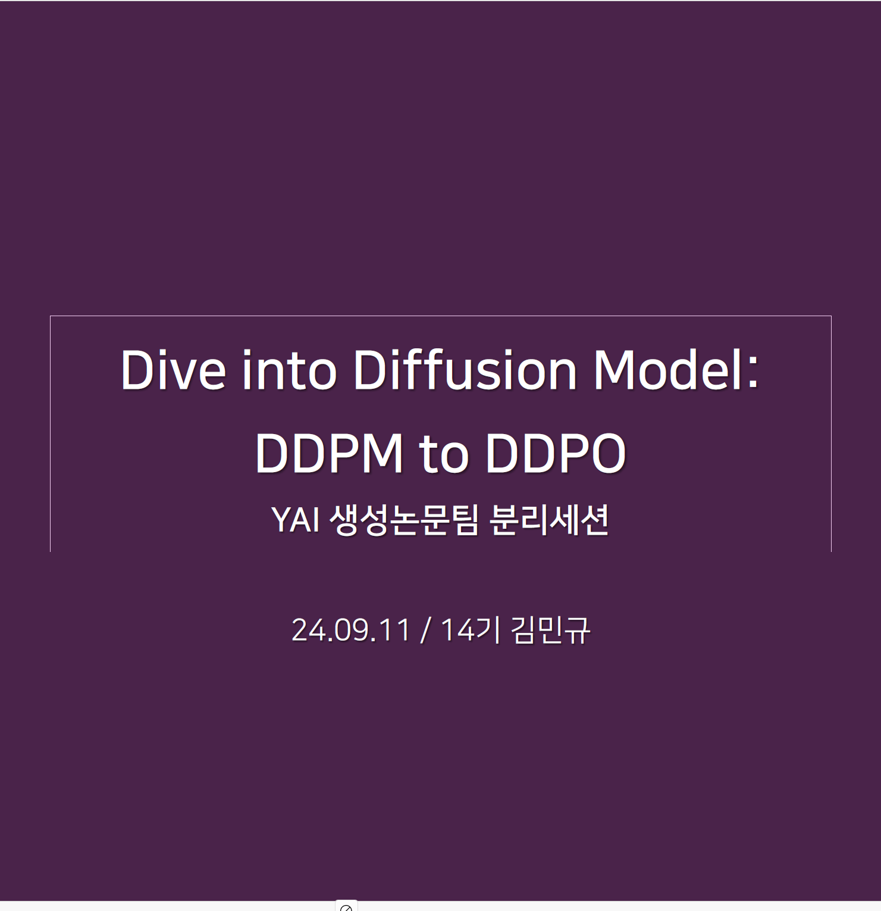

|
Mingyu Kim I'm an undergraduate student at Yonsei University in Seoul, Korea. I'm majoring in applied statistics, and working as a research intern at MLAI, advised by Prof. Kyungwoo Song. My research interset is mainly on causality and robustness of Large Language Models (LLMs). Moreover, I also have an interest in statistical and theorectical analysis of machine learning methods. For my own paper reviews during research intern and extracurricular activies, you can check here. Email / CV / Github / LinkedIn Always open to any research opportunities for related topics. |
{kind=link}
News[Oct. 2024] I was qualified for the BS/MS integrated program in the department of statistics and data science! |
Education
B.S. in the Department of Applied Statistics, Yonsei University, Seoul, Korea |
Research Interests
1. Domain Generalization on LLMs Pretrained large models are having surprising zero-shot and few-shot performances on various downstream tasks, inspired by the concept of foundation models. My research intersest is on understanding the theorectical success of foundation models. |
Projects |
|  |
Missing Children Aging Prediction via FADING & GOAE
Hyeongene Kim, Gunwoo Kim, Mingyu Kim, Jungsoo Yoon DSL Modeling Project, 2024 Fall Code / Video Based on FADING, the diffusion based model for aging and GOAE, the 3D rendering model with only one picture, we made two-step face aging architecture especially for Korean missing children. The addressed pre-process techniques such as upscaling and labeling and the results from this project are expected to contribute to related research for face aging. Full codes will be released soon. |

|
Face Mosaic using Mask R-CNN
Minwoo Park, Dongyoon Kim, Mingyu Kim, Sooran Kim YAI Toy Project, 2024 Summer Code Using the Mask R-CNN architecture for face detection, we made the model that applies mosaic effect for all detected faces Fine tuned by the WIDER FACE dataset, it performed well both for image and video. Although it was conducted as simple project for reviewing, this project helped me to broaden the technique related to AI research. |
|  |
Foundation Proposal for Midnight Bus Route in Seoul
Hyuna Ko, Mingyu Kim, Eunhee Kim, Junsik Choo DSL EDA Project, 2024 Summer Code / Video Solving the problem of not being able to distribute the amount of transportation compared to the high demand for late-night buses, project presented a new route by analyzing the actual amount of movement and bus boarding during the night time. It is quite meaningful in terms of suggesting a new plan for a circular route rather than a simple end-to-end route. Aims to participate in Seoul Big Data Campus contest next year. |

|
Solving Trolley Problem via Reinforcement Learning
Chaewon Yoo, Mingyu Kim, Seungjoo Yoo, Beomjun Shin STA3145 (Reinforcement Learing) Team Project, 2024 Spring To make the agent morality in RL, previous research aims to implement the conflict of ethics in terms of voting system. In this project, we aimed to implement the moral determinations based on Bayesian RL concept with multi-agent. Also, we implement the situation of trolley problem where the agent has to choose trade-off option using the safe gymnasium enviorment. |
|  |
Derivation of Dangerous Areas for Children Car Accident in Osan City
Hyemi Koo, Yikyung Yoon, Mingyu Kim, Junho Baek, Yoonyi Lee National Urban Data Analysis Challenges by COMPAS and Osan City, Jan. 2021 Based on the fact that the child protection zone in Osan City is insufficient to the number of traffic accidents occured, we analyzed the actual area status. For the analysis, spatial analysis APIs and multilinear regression model with diagnostic methods were used to increase their accuracy and intuition. Codes are not unavailable due to the data privacy. |
Talks |
|  |
Dive into Diffusion Model: DDPM to DDPO
Mingyu Kim YAI Regular Session Speech (Generative Model Team), Sep. 2024 Lightly presented the concept and flow of various methodologies derived from DDPM, and introduced the core of DDPO which combines generative model and reinforcement learning methodology. |
Teaching
Deep Learning (STA3140) - Professor: Jaewoo Park
SW Programming (YCS1002) - Professor: Jaekyung Kim |
Awards and Scholarships
Guwon Scholorship - Fall 2024, Spring 2024, Spring 2022
Academic Awards at Yonsei Univ. - Several Semesters |
Extracurricular Activities
Yonsei Data Science Lab For Detailed information, see here.
Yonsei Artificial Intelligence For Detailed information, see here. |
|
Website templete adapted from Jon Barron. |